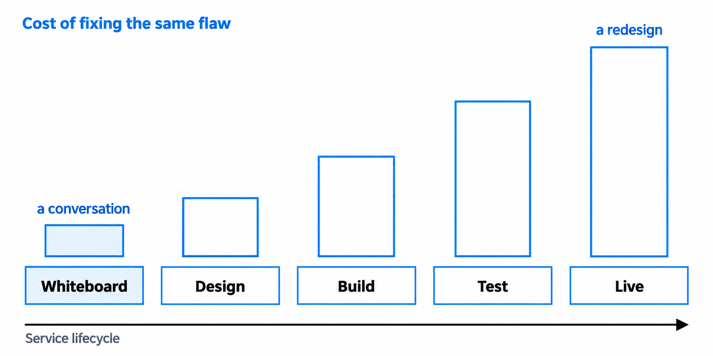
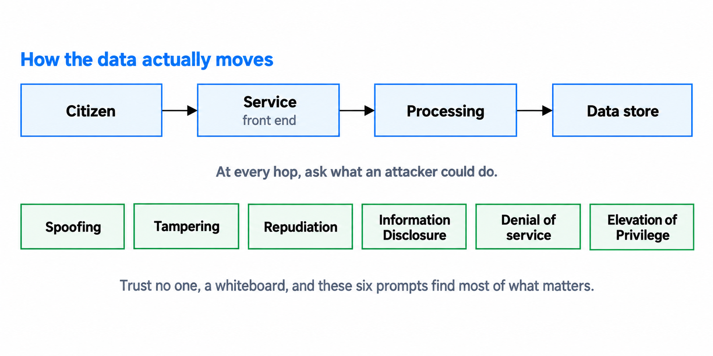
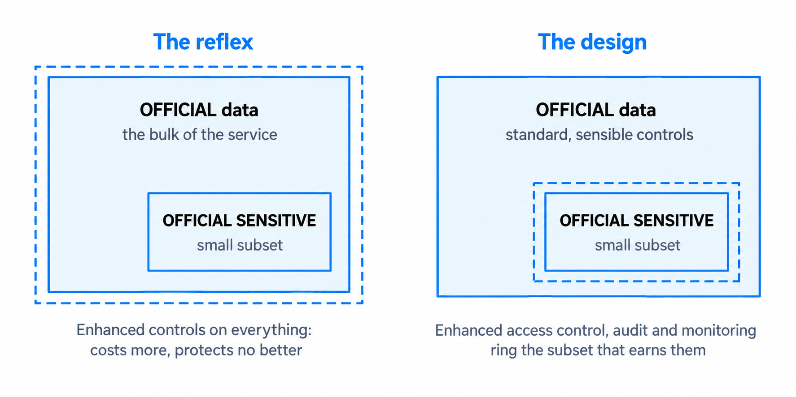
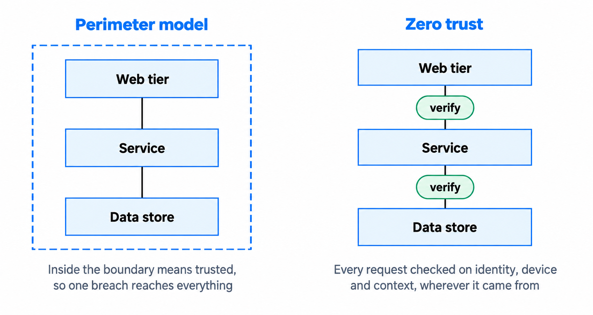

Security, privacy and trust by design
Make security, privacy and trust part of every design decision.
You'll come away with:
- How to identify security and privacy risks before selecting controls
- A practical way to threat-model a service and its data flows
- How classification, privacy obligations, identity and access shape architecture
- Questions for selecting proportionate controls and recording the evidence
Start with harm, responsibility and evidence
Security by design means considering cyber security from the start and throughout the service lifecycle. The government's Secure by Design principles put responsibility, risk and usable controls at the centre of that work.
Begin with the harm the service could cause if it fails or is misused. Could someone see information they should not see, change a decision, stop an essential service or use the service to harm another person? Which users, staff, organisations or public outcomes would be affected? This gives the team a reason for each control and a way to judge whether it is proportionate.
Keep three ideas separate:
- Security protects the service and its information from unauthorised access, change, disclosure and disruption.
- Privacy concerns how personal information is collected, used, shared, retained and removed, and how people's rights are supported.
- Trust is earned when the service behaves as promised, explains how information is used and can demonstrate that important actions are controlled and accountable.
Security specialists can help the team understand threats and select controls. They do not own every risk. A named business or service owner must understand the remaining risk and be accountable for accepting it.

Good security does not begin with a list of controls. It begins with a clear account of what could go wrong, who could be harmed and who owns the decision.
Threat-model the service
A threat model helps the team understand how someone could misuse or disrupt the service. It should be based on the real architecture, not an idealised diagram. Map the users, staff roles, external organisations, service components, data stores, interfaces and administration routes. Show where data moves and where it crosses a trust boundary.
The government guidance on performing threat modelling treats it as work that develops with the service. Run it early enough to influence the design, then revisit it when the architecture, threats or operating context change.
STRIDE is one useful set of prompts. It asks whether someone could:
- pretend to be another user or system
- change data, messages or code
- deny an action because the evidence is weak
- see information they should not see
- make the service unavailable
- gain more access than they should have

STRIDE is a prompt set, not a complete risk method and not the only way to threat-model a service. Add threats that follow from the service's users, purpose, policy, technology and operating environment. Include misuse by authorised users, mistakes, compromised suppliers and dependencies that fail.
Record enough to support a decision. For each important threat, note the affected asset or user, the harm, existing controls, gaps, proposed response, owner and evidence required. Keep accepted risks visible. A risk does not disappear because the team chose not to change the design.
Classify information before selecting controls
Classification helps the team understand the sensitivity of government information and the harm that compromise could cause. The Government Security Classifications Policy has three tiers: OFFICIAL, SECRET and TOP SECRET. Most information created or processed by the public sector is OFFICIAL.
OFFICIAL-SENSITIVE is not a separate classification tier. It is an additional marking for OFFICIAL information that needs limited distribution on a need-to-know basis. Do not apply it to every record that feels sensitive. Work with the information asset owner and security specialists to apply the policy and the organisation's handling rules correctly.

Classification informs the baseline, but it does not select every technical control for you. Also consider the threat, likely harm, volume, aggregation, legal duties, user needs and local policy. A large combined dataset may create risks that are not obvious from a single record. The architecture should show where sensitive information enters the service, where it is stored, who can access it, where it is shared and how it is removed.
Avoid raising the cost of the whole service simply because one part holds more sensitive information. Separate data or components where that produces a clearer boundary and reduces exposure. Do not force separation where it adds complexity without reducing risk. Record the reasoning either way.
Build privacy into the data lifecycle
The ICO's guidance on data protection by design and by default requires privacy to be considered at the start and throughout the processing lifecycle. For an architect, that means turning privacy decisions into the data model, interfaces, retention rules, access controls and operational processes.
For each item of personal information, establish:
- the specific purpose for collecting it and the lawful basis confirmed with the right specialist
- whether the service can meet the need with less information or a less identifying form
- where it comes from, where it is stored and which organisations receive it
- who can see or change it, including support staff, suppliers and system accounts
- how long it is needed and what deletion, anonymisation or archival action follows
- how the organisation will find, provide and correct the information when an individual exercises an applicable right
Design retention rather than relying on someone to remember it later. Define when the clock starts, what event changes it and how deletion works across replicas, search indexes, exports, analytics stores and backups. A backup may follow a different deletion process, but that process still needs to be understood and controlled.
The right of access allows people to obtain a copy of their personal information and supporting information about its use. Other rights can include correction, restriction or erasure, depending on the circumstances. The ICO's right of access guidance explains the obligation. Do not design on the assumption that every request requires erasure, or that erasure is always available. Make it possible to locate and act on the relevant records without a manual search across disconnected systems.
A Data Protection Impact Assessment is more than a document for approval. It connects the purpose, data flows, risks to people and measures used to reduce those risks. A DPIA is required when processing is likely to create a high risk to people's rights and freedoms. Involve the data protection officer or privacy specialist early, and ensure the architecture reflects the measures agreed in the DPIA.
Separate identity, authentication and authorisation
These decisions solve different problems:
- Identity proofing establishes confidence that a person is who they claim to be.
- Authentication checks the credential used to access the service.
- Authorisation decides what that person, device or service may do.
Match each step to the risk. A public information service may not need an account. A service that makes a high-impact decision may need stronger identity evidence. Do not collect identity evidence simply because the technology makes it possible.
GOV.UK One Login can provide sign-in and identity checking for eligible central government services. It does not decide whether a person is entitled to use a particular service or action. The service must still own its eligibility rules and authorisation decisions. For staff, reuse the departmental identity provider where it meets the need rather than creating another account store.
Role-based access control works well when permissions follow stable job roles. Attribute-based access control can help when a decision depends on context such as case ownership, region, device state or transaction value. Neither is automatically better. Choose the simplest model that expresses the rules correctly and can be understood, tested and audited.
The NCSC guidance on identity and access control covers people, devices and automated functions. Give each the minimum access needed, review that access and remove it when it is no longer required. Apply stronger controls to privileged activity and record who or what performed important actions.
Authentication gets someone through the door. Authorisation decides which rooms they can enter and what they can do inside them.
Apply zero trust as an architecture approach
Traditional perimeter security assumes that being inside a network makes a request more trustworthy. That is a weak basis for modern services spread across cloud platforms, organisational boundaries and remote devices.
The NCSC defines zero trust as an architectural approach that removes inherent trust in the network, assumes the network is hostile and verifies each request against an access policy. It is not a single product and it is not achieved by adding one gateway.

Start by knowing the users, devices, services and data in the architecture. Authenticate and authorise access using signals that are relevant to the risk. Protect communications over networks, including internal ones. Limit how far a compromised identity or component can reach, and monitor the behaviour of users, devices and services so the team can detect a change in risk.
Apply the approach in proportion to the service. Begin with the most important data, privileged paths and high-impact actions. Legacy systems may not support every principle immediately, so record the gap, contain the risk and set out how implicit trust will be reduced over time.
Turn risks into controls and evidence
A good control has a clear job. Preventative controls reduce the chance of an event. Detective controls reveal that it has happened or is developing. Corrective controls limit the harm and support recovery. Important risks often need a combination of all three.
Walk through the architecture and cover each layer:
- Data: minimisation, classification, encryption, access, retention, deletion and recovery.
- Application: input handling, permissions, secrets, dependencies and secure change.
- Identity: proofing, authentication, authorisation, privileged access and service accounts.
- Integration: trust boundaries, credentials, validation, rate limits and failure behaviour.
- Infrastructure: configuration, isolation, patching, network protection and resilience.
- Operations: logging, alerting, incident response, backup, recovery and support access.
- Supply chain: supplier access, shared responsibilities, assurance evidence and exit arrangements.
When selecting a cloud service, use the NCSC's Cloud Security Principles to examine the service and its provider. Supplier assurance does not remove the team's responsibility to configure the service securely and operate its part of the shared model.
For each significant risk, record the threat or failure, affected user or asset, selected controls, owner, evidence, residual risk and review trigger. Evidence might include configuration, test results, access reviews, monitoring records, recovery exercises or supplier assurance. A penetration test can provide useful evidence about an implementation, but it does not replace sound architecture, threat modelling or operational testing.
Trust also needs evidence. Give users clear information about why data is needed and what will happen to it. Make important decisions explainable. Keep audit records that support investigation and redress. Design failures so people know what happened and what they can do next.
Questions to ask on a real service
- What harm could result from disclosure, alteration, loss or unavailability?
- Which users, assets, data flows and trust boundaries are in scope?
- Who owns each important risk and who can accept the residual risk?
- How is the information classified, and what additional handling rules apply?
- What personal information is necessary, for which purpose and for how long?
- How will applicable information rights be supported across every copy and store?
- How are people, devices and services authenticated and authorised?
- What could a compromised user, component or supplier reach next?
- Which controls prevent, detect and correct each significant risk?
- What evidence shows the controls work, and what change would trigger another review?
This guide describes practical security, privacy and trust considerations for Solution Architects working around UK government services. The models and questions are teaching aids rather than a complete risk method, legal opinion or mandatory controls framework.
Last reviewed September 2026 against the primary government, NCSC and ICO guidance and supporting technical source below. Policy and guidance change, so check the source before relying on it.
- UK Government Security: Secure by Design principles
- UK Government Security: Performing threat modelling
- Microsoft Learn: STRIDE threat categories
- GOV.UK: Government Security Classifications Policy quick read
- ICO: Data protection by design and by default
- ICO: Right of access
- ICO: When a DPIA is required
- GOV.UK One Login: Get started
- NCSC: Identity and access control
- NCSC: Zero trust architecture design principles
- NCSC: Cloud Security Principles